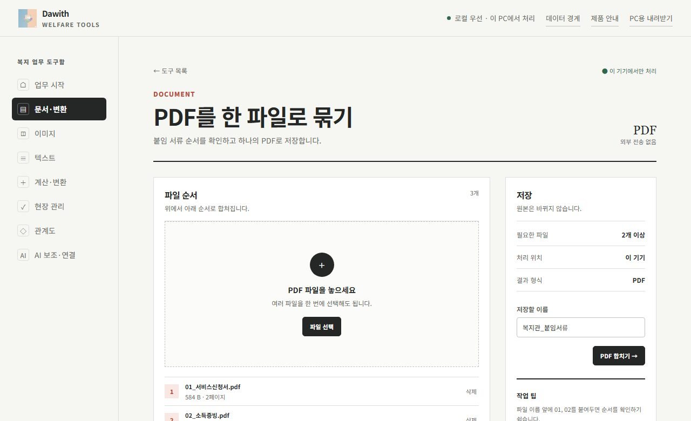

01
사례회의 붙임서류를 한 파일로
신청서, 소득 증빙, 등본처럼 따로 받은 PDF를 제출용 한 파일로 묶습니다.
- 문서·변환 → PDF 합치기를 엽니다.
- PDF 파일을 끌어다 놓고 순서를 확인합니다. 파일 이름 앞에 01, 02를 붙이면 순서 맞추기가 쉽습니다.
- 저장할 이름을 정하고 PDF 합치기를 누르면 한 파일로 저장됩니다.
필요한 쪽만 따로 빼야 할 때는 PDF 나누기를 쓰세요. 원본 파일은 바뀌지 않습니다.
